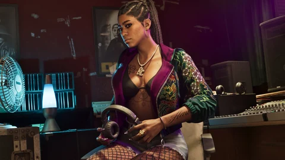

Radios y música · GTA VI
Las radios y la música de GTA VI
Aún no se ha anunciado ninguna emisora de radio. Esto es lo que Rockstar ha hecho sonar de verdad: los temas de los tráileres y del Extended Look, el álbum oficial del juego y lo que promete para la radio.
Cada tema indica de dónde viene: acreditado por Rockstar, u oído en un vídeo oficial e identificado por la prensa. Las listas de emisoras sacadas de las filtraciones no se incluyen. Entender los estados.
La radio de Leonida
Lo que Rockstar ha hecho sonar
Aún no hay emisoras: la radio recorre las cuatro fuentes oficiales de música. Elige un vídeo o el álbum: sus temas aparecen con el momento en que suenan, su estado y su fuente.
Tráiler 1
Todo el primer tráiler transcurre sobre un único tema, acreditado por Rockstar en la descripción del vídeo.
Tráiler 2
Un tema principal, acreditado por Rockstar, y breves fragmentos de la radio del coche mientras Jason conduce, identificados por la prensa.
Extended Look
Catorce temas con licencia que se oyen a lo largo de los 26 minutos; varios medios los han recogido con el minuto en que suenan. Rockstar no ha publicado la lista.
Grand Theft Auto VI: The Album
Las seis primeras canciones del álbum oficial, publicadas el día de su anuncio. Las 34 canciones llegan el 19 de noviembre de 2026, con el juego.
El álbum oficial
El álbum oficial
Ninguna emisora tiene aún nombre oficial: la única ficha de la sección es la del álbum. Se añadirá una ficha por emisora cuando Rockstar las presente.

Fuentes oficiales
Lo que Rockstar ha mostrado
Rockstar no ha presentado ninguna emisora. Ha hecho sonar temas en tres vídeos, ha publicado un álbum y ha prometido una radio repensada.
- Oficial
Tráiler 1
Todo el tráiler suena con “Love Is a Long Road”, de Tom Petty, que figura en los créditos de la descripción del vídeo oficial.

Imagen oficial de Rockstar Games - Oficial
Tráiler 2
“Hot Together”, de las Pointer Sisters, es el tema central del vídeo; tres fragmentos de la radio del coche suenan mientras Jason conduce por los Keys.

Imagen oficial de Rockstar Games - Visto en un medio
Extended Look
Catorce temas con licencia y una música original de sintetizadores en los momentos de tensión, según lo que ha recogido la prensa.

Imagen oficial de Rockstar Games - Oficial
Dazed
Rupert Humphries, del equipo narrativo de Rockstar, resume el espíritu musical: “We love Miami music, particularly Miami bass”. Cita a Kodak Black y Sexyy Red.
Imagen oficial de Rockstar Games - Oficial
El álbum y la radio
Anuncio de “Grand Theft Auto VI: The Album”, con Atlantic Records. El Newswire promete también una partitura dinámica y “la próxima evolución de la radio en el juego”, sin más detalles.
Imagen oficial de Rockstar Games
Un tema “visto” se ha oído en un vídeo oficial y varios medios lo han reconocido, sin créditos publicados por Rockstar.
Observaciones de los jugadores
Lo que ha identificado la comunidad
Jugadores y medios van más allá de los anuncios. Esto es lo que proponen, y lo que el sitio descarta.
Una lista de emisoras solo entrará en esta página con una presentación de Rockstar: una captura, un vídeo o un texto oficial.
Preguntas abiertas
Lo que queda por confirmar
La música del juego está anunciada, pero aún no explicada.
Las emisoras y sus locutores
Ningún nombre publicado. Rockstar solo promete una radio repensada dentro del juego.
La partitura dinámica
Anunciada el 17 de septiembre de 2026, sin una palabra sobre cómo funciona.
El álbum en antena
Sus 34 canciones están escritas para Vice City y Leonida; no se sabe en qué emisoras sonarán.
El compositor
No se ha dado ningún nombre para la música original que se oye en el Extended Look.
Tu propia música
No se ha anunciado ni playlist personal ni la posibilidad de escuchar Spotify en el juego.
Cada respuesta se añadirá a la página con su fuente en cuanto se publique.
Herramientas del sitio
Lo que cambia para ti
La música ya tiene su lugar en la historia. Aquí tienes dónde encontrarla en el sitio.
Cuando se conozcan las emisoras, cada una tendrá aquí su ficha, con su estilo y sus locutores.
Preguntas
Preguntas frecuentes
Las preguntas que se escriben en un buscador, con respuestas cortas y fechadas.
¿Qué radios habrá en GTA 6?
¿Cuál es la música del Tráiler 2?
¿Quién canta en el Tráiler 1?
¿Qué canciones se oyen en el Extended Look?
¿Qué es “Grand Theft Auto VI: The Album”?
¿Están confirmados los nombres de emisoras que circulan?
22 fuentes consultadas
Fuentes y estados
Cada tema y cada frase de esta página remiten a una fuente con fecha. Las páginas se consultaron el 4 de octubre de 2026 a través de un buscador: ese día no se podían abrir directamente desde nuestro taller.
Oficial
Página o vídeo publicado por Rockstar (web de GTA VI, Newswire, tráileres, Extended Look), o declaraciones de un responsable de Rockstar recogidas por un medio identificado, con la fecha.
Visto en un medio
Lo que muestra una imagen o una secuencia oficial sin que Rockstar lo diga en un texto: un plano de tráiler, una captura, un momento del Extended Look, con el minuto exacto cuando se conoce.
Identificación de la comunidad
Relación establecida por jugadores, una wiki o un sitio de fans (lugar real, actor, condado). Se cita como tal, nunca se presenta como confirmada.
Por confirmar
Pregunta sin respuesta publicada: precio, compra, acceso, papel en la historia. La anotamos para no tener que adivinarla.
Páginas consultadas
- OficialRockstar Games: vídeos oficiales de GTA VI (Tráiler 1, Tráiler 2, An Extended Look)
Los tres vídeos de los que vienen los temas. Las descripciones de los Trailers 1 y 2 incluyen en los créditos “Love Is a Long Road” y “Hot Together”.
- OficialRockstar Newswire: Grand Theft Auto VI, An Extended Look
Anuncio de la presentación de unos 26 minutos, primero en Netflix y después en YouTube.
- OficialRockstar Newswire : Announcing Grand Theft Auto VI: The Album, Coming November 19
34 canciones originales con Atlantic Records, lanzamiento el 19 de noviembre de 2026, seis canciones disponibles; la música del juego, su partitura dinámica y “la próxima evolución de la radio en el juego” se detallarán más adelante.
- OficialAtlantic Records to release Grand Theft Auto VI: The Album
Recoge el anuncio: los seis singles, sus artistas y las ediciones en CD y vinilo.
- Oficial‘Grand Theft Auto VI: The Album’ Will Feature 34 New Songs
Recoge el anuncio oficial: 34 canciones originales, lanzamiento con el juego.
- Identificación de la comunidadRockstar announces Grand Theft Auto 6: The Album
El vinilo de edición limitada, agotado en pocos minutos: un dato constatado por la prensa, no un anuncio de Rockstar.
- OficialGTA 6 Will Feature The “Next Evolution Of In-Game Radio,” Rockstar Says
Recoge la frase del Newswire sobre la partitura dinámica y la radio en el juego.
- OficialThe first GTA 6 trailer has launched, and Tom Petty is all over it
“Love Is a Long Road” (Full Moon Fever, 1989) en el Tráiler 1; mensaje de los titulares de los derechos de Tom Petty.
- OficialGTA 6 Trailer 2 Song: What’s The Tune Playing
“Hot Together”, de las Pointer Sisters, tema principal del Tráiler 2.
- Visto en un medioWhat song soundtracks ‘Grand Theft Auto 6’s Trailer 2?
Los fragmentos de la radio del coche del Tráiler 2: Zenglen, Wang Chung y Tammy Wynette.
- Visto en un medioEvery GTA 6 song confirmed so far
Lista de los temas de los vídeos oficiales, actualizada en 2026.
- Visto en un medioAll Songs Featured in GTA 6 Extended Look (With Timestamps)
Los catorce temas del Extended Look y el minuto en que suenan, recogidos en esta página.
- Visto en un medioGTA 6 Extended Look Soundtrack: Every Song We Heard
La misma lista de catorce temas, elaborada por su cuenta.
- Visto en un medioMusic features prominently in Grand Theft Auto VI ‘extended look’
La música integrada en la historia; “Devil Woman”, entre los temas más presentes.
- Visto en un medioPhil Collins Returns To Vice City With An Ominous Song Choice For Jason And Lucia
“Against All Odds”, de Phil Collins, sobre imágenes de Jason y Lucia.
- Visto en un medioGrand Theft Auto 6 Extended Look’s Song Choices Revealed
Entre los temas con licencia, una música original de sintetizadores acompaña los momentos de tensión.
- OficialGTAVI: An exclusive deep dive into the video game of the decade
Entrevista con Rupert Humphries (Rockstar): la música de Miami, en particular el Miami bass, Kodak Black y Sexyy Red.
- Visto en un medioNew GTA 6 Billboards Appear As Rockstar Teams Up With Spotify
Vallas de GTA VI con los colores de Spotify en Los Ángeles, Nueva York y Miami; no se ha anunciado ninguna integración en el juego.
- Identificación de la comunidadGrand Theft Auto 6: Every Song Revealed So Far
Separa los temas de los vídeos oficiales de los de las filtraciones; los nombres de emisoras solo vienen de las filtraciones.
- Identificación de la comunidadGTA Wiki: V-Rock (HD Universe)
El logo de V-Rock en una prenda de Jason, según los jugadores; la emisora no está anunciada.
- Identificación de la comunidadPostmode: 24 detalles para volver a ver en el Extended Look
Señala un anuncio de “Vice City FM” en el Extended Look, sin indicar el minuto.
- Por confirmarGTA 6 Will Have DJ Khaled In-Game Radio Station, Report
Recoge un rumor de un informador; ni Rockstar ni el artista han confirmado nada.
Lo que no hacemos. Ningún dato sacado de las filtraciones de 2022 o de 2026, ninguna letra de canción, ningún fragmento de audio o de vídeo, ninguna portada. Los estados se explican en el Tutorial.
Sigue explorando


¿Y después?
Lo que sigue se escribe el 19 de noviembre de 2026.
Cada ficha se completará con el juego: lo que hay, lo que se hace allí, lo que da. Hasta entonces, nada inventado.